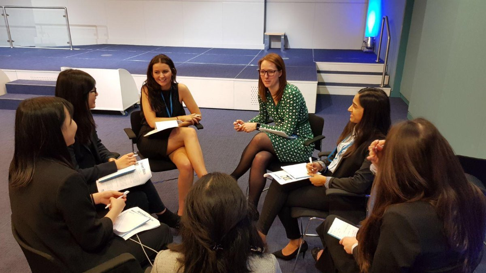
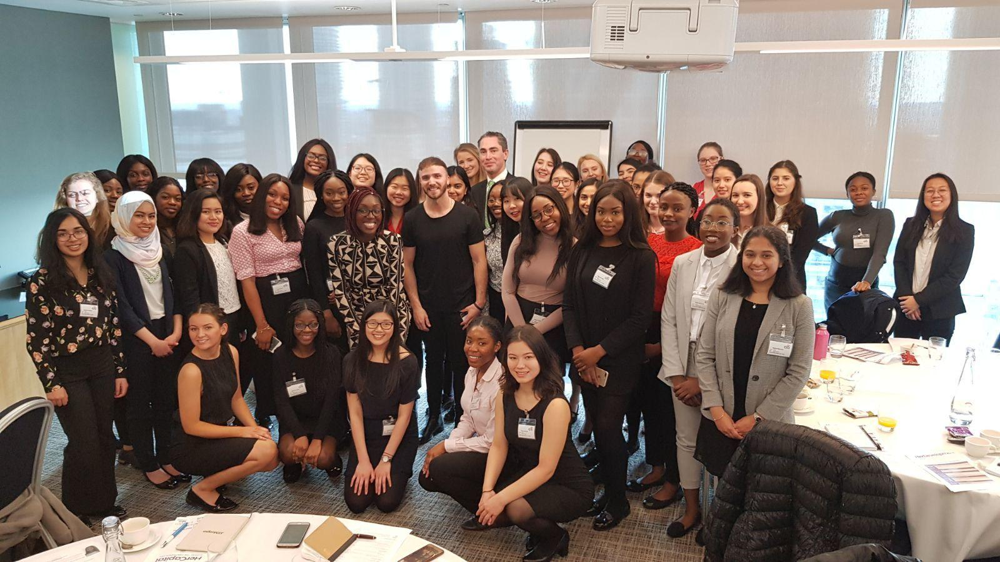
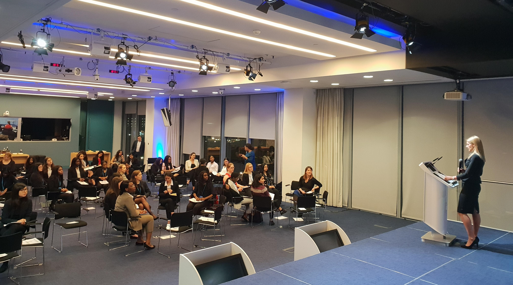
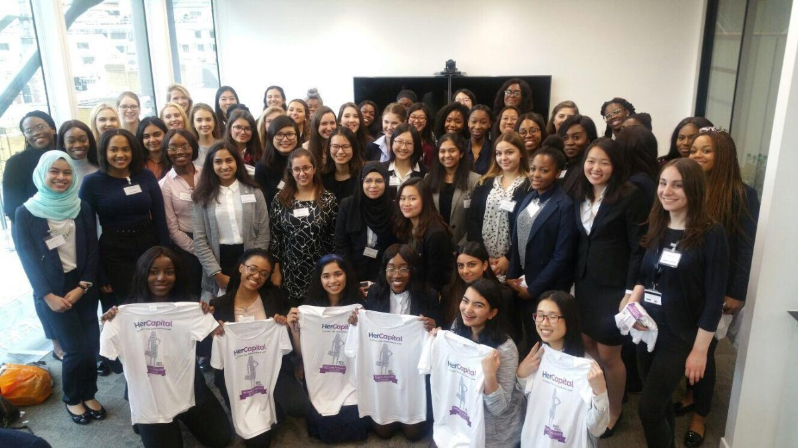

HerCapital is an engaging and inspiring year long programme designed to close the confidence gap that exists between men and women through a host of challenges and workshops targeted at first year female university students. The programme has deeply enhanced my business acumen, leadership skills and confidence through exposing me to the finance industry and enabling me to network with expert professionals from significant financial organisations such as Barclays and Lazard.
 One of the main reasons that the confidence gap exists is because of the differences in exposure to technology between genders. The technology sector is heavily male dominated, with just 17% of those working in the industry being female. To increase our exposure, SpartaGlobal hosted a coding course where we learned to code using html, css and javascript, and by the end of the week were able to make our own website.
One of the HerHealth challenges was to complete the 'Couch to 5k' challenge, and after 12 weeks we all ran 5km. We also completed weekly health challenges, such as cutting out sugar for a week or creating a meal which included a vegetable that we had not tried before as the main element of the meal.
Our HerWorld challenge was to fundraise for anti slavery charity A21. Organisation and execution of this task was the biggest challenge of the programme due to the short deadline, however we successfully raised £480 within our team of 6.
 